By Karim Ali & Kacper Bak
July 29th, 2010
There are several reasons:
People configure operating system kernels for several reasons. Usually, they want to customize kernels to specific hardware or to particular needs. The majority of users configure kernels without even realizing this fact. We distinguish between two types of kernel configuration: static and dynamic. In the former method, software is customized before compilation so that only chosen pieces of code are compiled. It results in a smaller program footprint and faster compilation. On the other hand, the latter configuration requires more effort because any additional piece of software has to be compiled separately. In many modern distributions users are provided with fully functional kernels, which they do not have to compile themselves. Instead, they dynamically customize the software by loading relevant modules. The disadvantage of the second method is that preparing such a big kernel takes a lot of time and resources.
Regardless of the configuration type, there is still need to customize the software. Although this task can be done manually, most users prefer to use automated and intuitive tools that could guarantee that the system works properly. Unfortunately, the software currently used for kernel configuration is neither fully automated nor easy to use. In addition, static and dynamic configuration are two separate mechanisms and are supported by completely different programs. Static configuration is done by the Linux Kernel Configurator, while dynamic configuration is done by adding or removing compiled modules using other tools (e.g. modprobe). In our opinion, the two worlds can be merged to provide a single user interface.
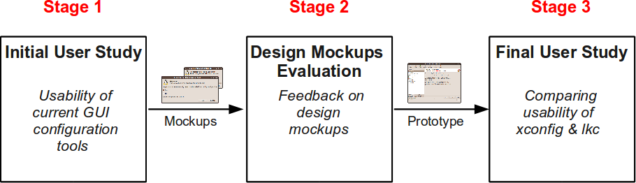
Figure 1. Different project stages
The project went through three major stages. First, we carried out an initial user study to identify major usability issues of the current Linux kernel configuration tools. We then proposed some alternative mockup designs based on the feedback we got from the participants. Second, we carried out a user study to get comments and constructive feedback on the various design mockups we had for our tool prototype. According to the feedback, we reflected user suggestions and remarks in the implementation of the prototype. Finally, we did a final user study to evaluate our prototype and compare it to xconfig. General reactions of the test group were positive and participants saw the new tool as an improvement over the standard tools. We believe that our findings will help in creating better configuration applications not only for the Linux kernel, but also for other kinds of variability models.
We carried out an initial user study where six participants were asked to statically configure the Linux kernel for a popular laptop for typical home or office use. They used the standard xconfig tool that comes with the Linux kernel. We observed many usability problems that people faced during the configuration process. Our findings can summarized as follows:
We designed several mockups that reflect the feedback we got from the participants of our initial user study. We had two categories of designs, one for the splash screen shown to the user once the application is launched. The other category of designs is for the application prototype itself. Figure 2 shows the design mockups for the former, while Figure 3 shows those for the latter.
We then showed the participants of our second user study with those design. Accordingly to the feedback we got, we could make the following conclusions:
| 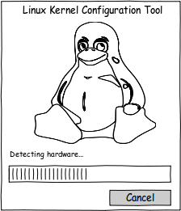 | 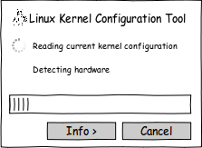 | 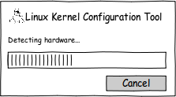 | |
| (a) | (b) | (c) | (d) |
Figure 2. Splash screen design mockups
The feedback we got from the users about the design mockups of the tool prototype allowed us to deduce the following:
| 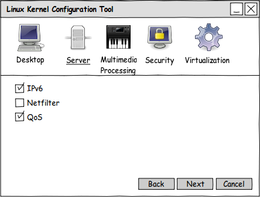 |
| (a) |
| 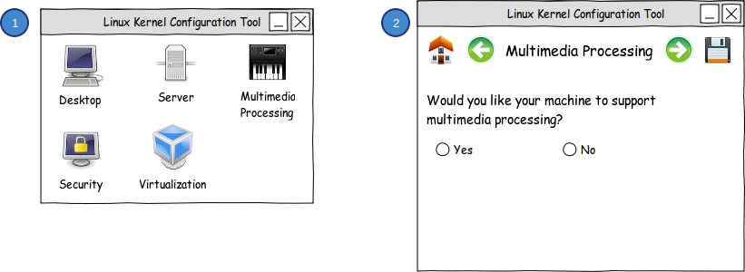 |
| (b) |
| 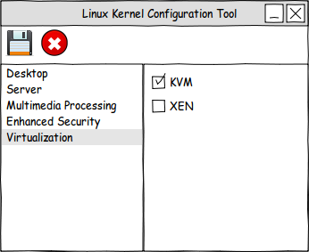 | 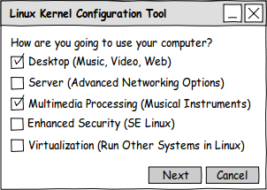 |
| (c) | (d) |
Figure 3. lkc tool prototype design mockups
Definitely. We can always come up with better user interface designs if we identify the usability problems with the current kernel configuration tools and try to solve them. That's exactly what we did in the previous user studies and we came up with a suggested prototype for such tool.
| 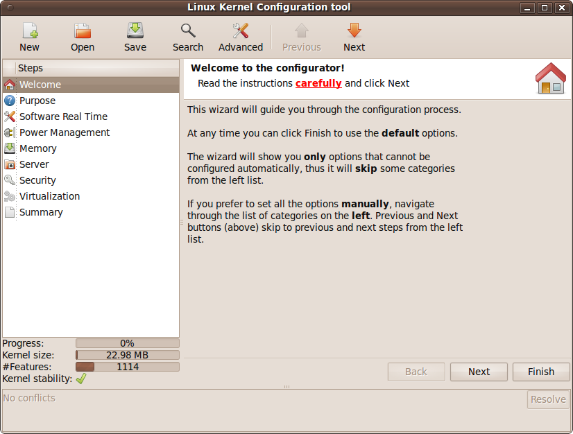 | 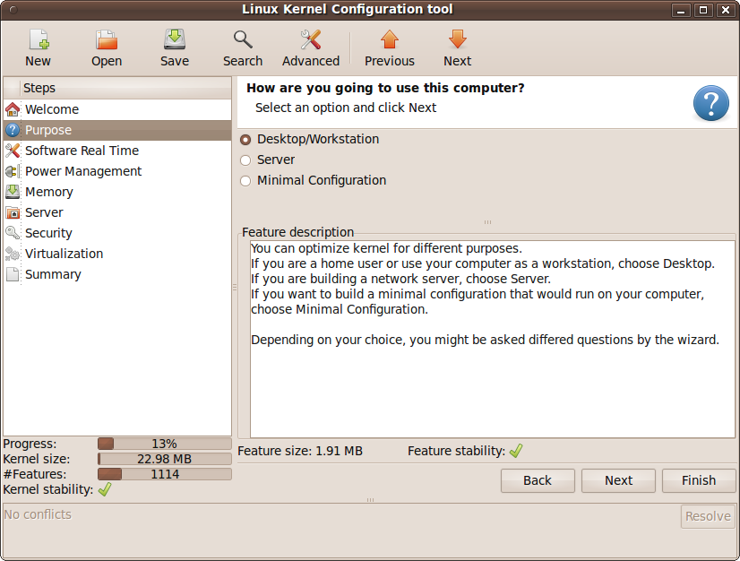 |
| (a) | (b) |
| 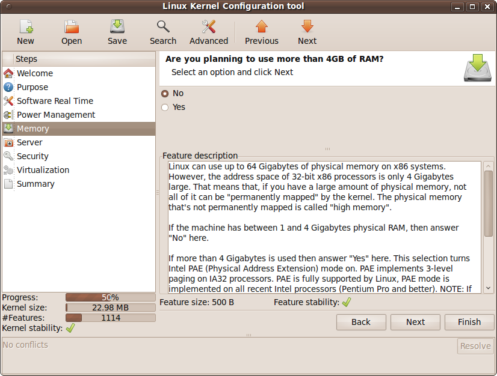 | 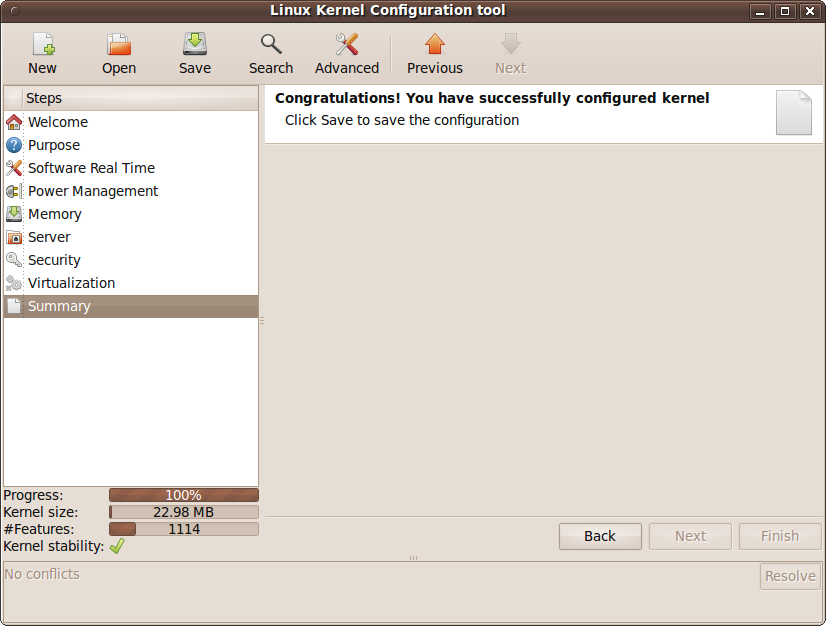 |
| (c) | (d) |
Figure 4. Suggested lkc prototype design
We carried out another user study to answer that question. The aim of that study was to compare the usability of xconfig and our lkc prototype. The feedback we got was a mixture of appreciating the suggested tool prototype and some suggestions to improve the design. The positive feedback we got from users was that our prototype is definitely an improvement compared to xconfig. Users had various reasons to make such a statement. In general, comments stated that the prototype is simple, intuitive and easy to use. Additionally, users really appreciated the two-way navigation: free navigation through the left panel, and wizard-based navigation through Back/Next buttons. Users also appreciated the statistics panel because it gave them an idea of how their current selections reflect on the overall status of the kernel that will be configured using the generated configuration file. Finally, hiding unnecessary details and not overwhelming users with an explosion of features was another source of appreciation.
On the other hand, some users experienced difficulties using our prototype. One user did not know the meaning of features in the statistics panel. Two users did not quite understand what stability means in our prototype. The option Minimal configuration was rather confusing for one of our users. Finally, one of the users commented on the fact that the study we carried on was biased because it was easy to accomplish the task just by answering the questions provided by the tool.
Actually, we only took the first steps and we have many steps ahead of us to be able to claim that the problem is solved (partially at least). However, we think we are on the right track. Additionaly, we got a very rich feedback from the participants of our final user study about the design of our prototype. Implementing some of those suggestions would add more value to the prototype. The design suggestions include the following:
The Linux kernel is a complex piece of software that is highly customizable which might overwhelm novice and intermediate users. Currently available tools do not provide an adequate solution for them. The results of our user studies show that users (even advanced users) prefer to have some features available in a typical Linux kernel configuration tool. Such features include: free navigation, few categories of features, understandable (and helpful) description text, useful search tools, automatic hardware detection. Finally, it would be interesting to have a fully functional application with all the desired features implemented and use it for real life scenarios and get feedback from the FOSS community about the feature set it provides, and its design.